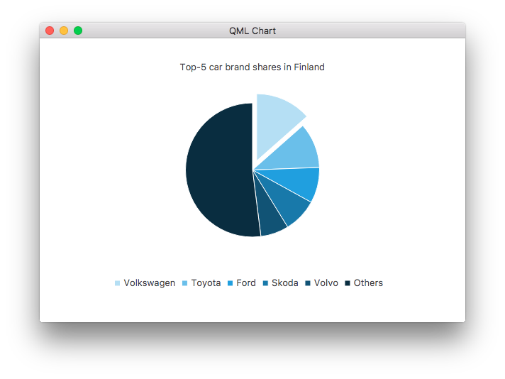
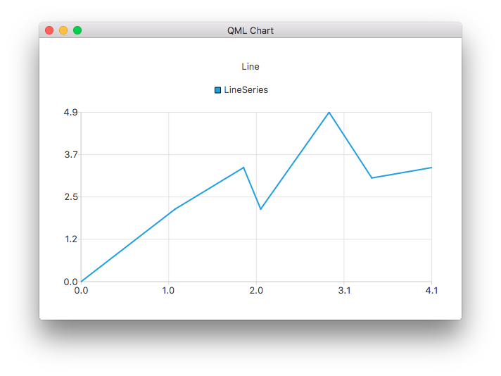
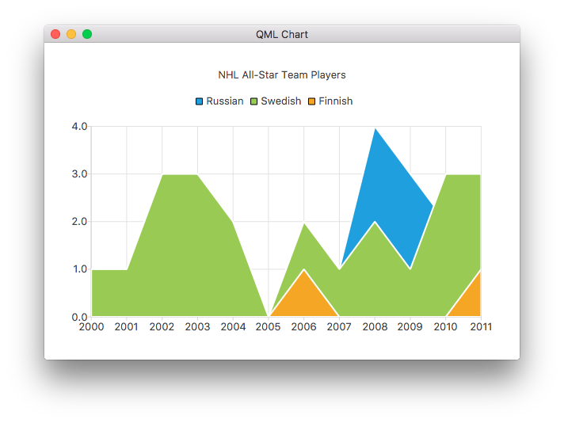

Charts with QML Gallery
Demonstrates how to use the different chart types by using qml.
Running the Example
To run the example from Qt Creator, open the Welcome mode and select the example from Examples. For more information, visit Building and Running an Example.
This is a Qt Quick application, the files for each chart type are located in the qml directory of the example folder and are loaded arranged into a ListView by main.qml, located in this examples directory.
This documentation won't focus on the top level layout or loading, but rather on the use of the Qt Charts QML API.
Including dependencies
All .qml files start with:
import QtQuick import QtCharts
Creating charts with QML
Creating each chart type begins with the creation of a ChartView.
To create a pie chart, we use the PieSeries API together with a few PieSlices:

ChartView { id: chart title: "Top-5 car brand shares in Finland" anchors.fill: parent legend.alignment: Qt.AlignBottom antialiasing: true property variant othersSlice: 0 PieSeries { id: pieSeries PieSlice { label: "Volkswagen"; value: 13.5 } PieSlice { label: "Toyota"; value: 10.9 } PieSlice { label: "Ford"; value: 8.6 } PieSlice { label: "Skoda"; value: 8.2 } PieSlice { label: "Volvo"; value: 6.8 } } Component.onCompleted: { // You can also manipulate slices dynamically, like append a slice or set a slice exploded othersSlice = pieSeries.append("Others", 52.0); pieSeries.find("Volkswagen").exploded = true; } }
You can create a chart with a line series:

ChartView { title: "Line Chart" anchors.fill: parent antialiasing: true LineSeries { name: "Line" XYPoint { x: 0; y: 0 } XYPoint { x: 1.1; y: 2.1 } XYPoint { x: 1.9; y: 3.3 } XYPoint { x: 2.1; y: 2.1 } XYPoint { x: 2.9; y: 4.9 } XYPoint { x: 3.4; y: 3.0 } XYPoint { x: 4.1; y: 3.3 } } }
And a spline series:

ChartView { title: "Spline Chart" anchors.fill: parent antialiasing: true SplineSeries { name: "Spline" XYPoint { x: 0; y: 0.0 } XYPoint { x: 1.1; y: 3.2 } XYPoint { x: 1.9; y: 2.4 } XYPoint { x: 2.1; y: 2.1 } XYPoint { x: 2.9; y: 2.6 } XYPoint { x: 3.4; y: 2.3 } XYPoint { x: 4.1; y: 3.1 } } }
You can create a chart that illustrates the NHL All-Star player selections by using three area series:

ChartView { title: "NHL All-Star Team Players" anchors.fill: parent antialiasing: true // Define x-axis to be used with the series instead of default one ValueAxis { id: valueAxis min: 2000 max: 2011 tickCount: 12 labelFormat: "%.0f" } AreaSeries { name: "Russian" axisX: valueAxis upperSeries: LineSeries { XYPoint { x: 2000; y: 1 } XYPoint { x: 2001; y: 1 } XYPoint { x: 2002; y: 1 } XYPoint { x: 2003; y: 1 } XYPoint { x: 2004; y: 1 } XYPoint { x: 2005; y: 0 } XYPoint { x: 2006; y: 1 } XYPoint { x: 2007; y: 1 } XYPoint { x: 2008; y: 4 } XYPoint { x: 2009; y: 3 } XYPoint { x: 2010; y: 2 } XYPoint { x: 2011; y: 1 } } } ...
Then a couple of scatter series:
ChartView { title: "Scatter Chart" anchors.fill: parent antialiasing: true ScatterSeries { id: scatter1 name: "Scatter A" XYPoint { x: 1.5; y: 1.5 } XYPoint { x: 1.5; y: 1.6 } XYPoint { x: 1.57; y: 1.55 } XYPoint { x: 1.8; y: 1.8 } XYPoint { x: 1.9; y: 1.6 } XYPoint { x: 2.1; y: 1.3 } XYPoint { x: 2.5; y: 2.1 } } ScatterSeries { name: "Scatter B" XYPoint { x: 2.0; y: 2.0 } XYPoint { x: 2.0; y: 2.1 } XYPoint { x: 2.07; y: 2.05 } XYPoint { x: 2.2; y: 2.9 } XYPoint { x: 2.4; y: 2.7 } XYPoint { x: 2.67; y: 2.65 } } } ...
And a few different bar series:
ChartView { title: "Bar Chart" anchors.fill: parent legend.alignment: Qt.AlignBottom antialiasing: true BarSeries { id: mySeries axisX: BarCategoryAxis { categories: ["2007", "2008", "2009", "2010", "2011", "2012" ] } BarSet { label: "Bob"; values: [2, 2, 3, 4, 5, 6] } BarSet { label: "Susan"; values: [5, 1, 2, 4, 1, 7] } BarSet { label: "James"; values: [3, 5, 8, 13, 5, 8] } } }
ChartView { title: "Stacked Bar Chart" anchors.fill: parent legend.alignment: Qt.AlignBottom antialiasing: true StackedBarSeries { axisX: BarCategoryAxis { categories: ["2007", "2008", "2009", "2010", "2011", "2012" ] } BarSet { label: "Bob"; values: [2, 2, 3, 4, 5, 6] } BarSet { label: "Susan"; values: [5, 1, 2, 4, 1, 7] } BarSet { label: "James"; values: [3, 5, 8, 13, 5, 8] } } }
ChartView { title: "Percent Bar Chart" anchors.fill: parent legend.alignment: Qt.AlignBottom antialiasing: true PercentBarSeries { axisX: BarCategoryAxis { categories: ["2007", "2008", "2009", "2010", "2011", "2012" ] } BarSet { label: "Bob"; values: [2, 2, 3, 4, 5, 6] } BarSet { label: "Susan"; values: [5, 1, 2, 4, 1, 7] } BarSet { label: "James"; values: [3, 5, 8, 13, 5, 8] } } }
ChartView { title: "Horizontal Bar Chart" anchors.fill: parent legend.alignment: Qt.AlignBottom antialiasing: true HorizontalBarSeries { axisY: BarCategoryAxis { categories: ["2007", "2008", "2009", "2010", "2011", "2012" ] } BarSet { label: "Bob"; values: [2, 2, 3, 4, 5, 6] } BarSet { label: "Susan"; values: [5, 1, 2, 4, 1, 7] } BarSet { label: "James"; values: [3, 5, 8, 13, 5, 8] } } }
ChartView { title: "Horizontal Stacked Bar Chart" anchors.fill: parent legend.alignment: Qt.AlignBottom antialiasing: true HorizontalStackedBarSeries { axisY: BarCategoryAxis { categories: ["2007", "2008", "2009", "2010", "2011", "2012" ] } BarSet { label: "Bob"; values: [2, 2, 3, 4, 5, 6] } BarSet { label: "Susan"; values: [5, 1, 2, 4, 1, 7] } BarSet { label: "James"; values: [3, 5, 8, 13, 5, 8] } } }

ChartView { title: "Horizontal Percent Bar Chart" anchors.fill: parent legend.alignment: Qt.AlignBottom antialiasing: true HorizontalPercentBarSeries { axisY: BarCategoryAxis { categories: ["2007", "2008", "2009", "2010", "2011", "2012" ] } BarSet { label: "Bob"; values: [2, 2, 3, 4, 5, 6] } BarSet { label: "Susan"; values: [5, 1, 2, 4, 1, 7] } BarSet { label: "James"; values: [3, 5, 8, 13, 5, 8] } } }
This demonstrates how to create a donut chart with two pie series:

ChartView { id: chart title: "Production Costs" anchors.fill: parent legend.visible: false antialiasing: true PieSeries { id: pieOuter size: 0.96 holeSize: 0.7 PieSlice { id: slice; label: "Alpha"; value: 19511; color: "#99CA53" } PieSlice { label: "Epsilon"; value: 11105; color: "#209FDF" } PieSlice { label: "Psi"; value: 9352; color: "#F6A625" } } PieSeries { size: 0.7 id: pieInner holeSize: 0.25 PieSlice { label: "Materials"; value: 10334; color: "#B9DB8A" } PieSlice { label: "Employee"; value: 3066; color: "#DCEDC4" } PieSlice { label: "Logistics"; value: 6111; color: "#F3F9EB" } PieSlice { label: "Materials"; value: 7371; color: "#63BCE9" } PieSlice { label: "Employee"; value: 2443; color: "#A6D9F2" } PieSlice { label: "Logistics"; value: 1291; color: "#E9F5FC" } PieSlice { label: "Materials"; value: 4022; color: "#F9C36C" } PieSlice { label: "Employee"; value: 3998; color: "#FCE1B6" } PieSlice { label: "Logistics"; value: 1332; color: "#FEF5E7" } } Component.onCompleted: { // Set the common slice properties dynamically for convenience for (var i = 0; i < pieOuter.count; i++) { pieOuter.at(i).labelPosition = PieSlice.LabelOutside; pieOuter.at(i).labelVisible = true; pieOuter.at(i).borderWidth = 3; } for (var i = 0; i < pieInner.count; i++) { pieInner.at(i).labelPosition = PieSlice.LabelInsideNormal; pieInner.at(i).labelVisible = true; pieInner.at(i).borderWidth = 2; } } }
Additionally, anti-aliasing is set with the qml property in Qt Quick 2.
More charts
See the following links for walk-through of the remaining charts in this example app.
Shows you how to customize different visual properties of a ChartView and a series. | |
Shows you how to create your own custom legend. | |
Demonstrates how to use axes in your QML application. | |
Implements an F1 Legends Chart to demonstrate List Models as Data Sources. | |
Shows how to make a few different polar chart in your QML application. |